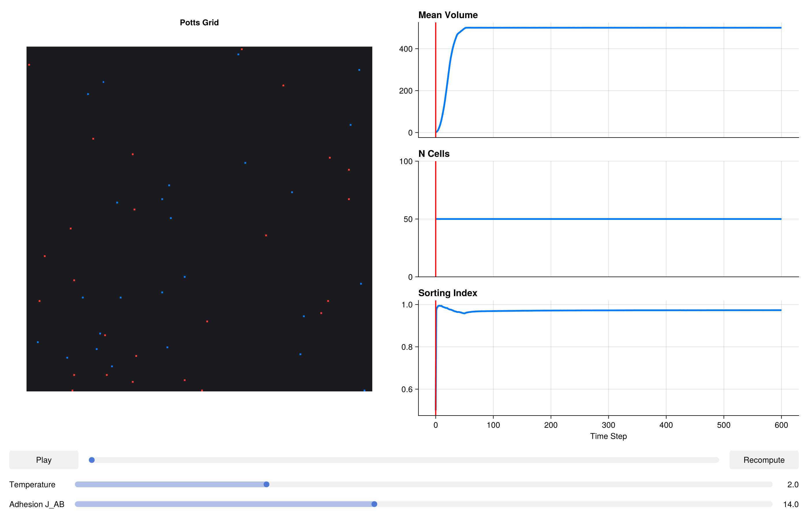

using CairoMakie
CairoMakie.activate!()Interactive Dashboard with explore_cpm
Writing code, re-running a simulation, and squinting at a static plot is a slow feedback loop for parameter tuning. explore_cpm replaces this cycle with a live, reactive dashboard: adjust a slider, and the full simulation re-runs automatically while metric plots update in real time. This tutorial builds a cell-sorting model and walks through every feature of the dashboard.
Packages
using PottsToolkit
using MakiePotts
using StatisticsModel definition
Two cell populations (A and B) with differential adhesion. The sorting behaviour is exquisitely sensitive to temperature and the A–B adhesion energy — exactly the parameters we will expose as interactive sliders.
A = CellType(:A)
B = CellType(:B)
Medium = CellType(:Medium, is_background = true)
sys = PottsSystem(
cell_types = [Medium, A, B],
penalties = [
VolumeComponent(
A => (λ = 5.0f0, target = 500),
B => (λ = 5.0f0, target = 500)
),
AdhesionComponent(
(A, Medium) => 16.0f0,
(B, Medium) => 16.0f0,
(A, A) => 2.0f0,
(B, B) => 2.0f0,
(A, B) => 14.0f0 # heterotypic — start high for sorting
)
]
)
prob = PottsProblem(
sys,
Dict(A => 25, B => 25),
(200, 200);
tspan = (0, 600),
topology = VonNeumannTopology{2}()
)PottsProblem{PottsState{Matrix{UInt32}, StructArrays.StructVector{@NamedTuple{volumes::Int32, target_volumes::Int32, surface_areas::Int32, target_surface_areas::Int32, cell_types::UInt8, pressures::Float32, tensions::Float32, anchor_x::Float32, anchor_y::Float32, anchor_z::Float32, force_x::Float32, force_y::Float32, force_z::Float32, target_lengths::Float32, current_lengths::Float32, major_axis_x::Float32, major_axis_y::Float32, major_axis_z::Float32, length_pressures::Float32, com_acc_sin_x::Float32, com_acc_cos_x::Float32, com_acc_sin_y::Float32, com_acc_cos_y::Float32, com_acc_sin_z::Float32, com_acc_cos_z::Float32, inertia_xx::Float32, inertia_yy::Float32, inertia_zz::Float32, inertia_xy::Float32, inertia_xz::Float32, inertia_yz::Float32, volume_lambdas::Float32, surface_area_lambdas::Float32, length_lambdas::Float32, adhesion_modifiers::Float32}, @NamedTuple{volumes::Vector{Int32}, target_volumes::Vector{Int32}, surface_areas::Vector{Int32}, target_surface_areas::Vector{Int32}, cell_types::Vector{UInt8}, pressures::Vector{Float32}, tensions::Vector{Float32}, anchor_x::Vector{Float32}, anchor_y::Vector{Float32}, anchor_z::Vector{Float32}, force_x::Vector{Float32}, force_y::Vector{Float32}, force_z::Vector{Float32}, target_lengths::Vector{Float32}, current_lengths::Vector{Float32}, major_axis_x::Vector{Float32}, major_axis_y::Vector{Float32}, major_axis_z::Vector{Float32}, length_pressures::Vector{Float32}, com_acc_sin_x::Vector{Float32}, com_acc_cos_x::Vector{Float32}, com_acc_sin_y::Vector{Float32}, com_acc_cos_y::Vector{Float32}, com_acc_sin_z::Vector{Float32}, com_acc_cos_z::Vector{Float32}, inertia_xx::Vector{Float32}, inertia_yy::Vector{Float32}, inertia_zz::Vector{Float32}, inertia_xy::Vector{Float32}, inertia_xz::Vector{Float32}, inertia_yz::Vector{Float32}, volume_lambdas::Vector{Float32}, surface_area_lambdas::Vector{Float32}, length_lambdas::Vector{Float32}, adhesion_modifiers::Vector{Float32}}, Int64}, Vector{Int32}, Vector{UInt32}}, Int64, PottsParameters{VonNeumannTopology{2}, Tuple{VolumePenalty{Rigid, Vector{Float32}}, AdhesionPenalty{Rigid, Matrix{Float32}, false}}, Tuple{VolumeTracker}}, Base.Pairs{Symbol, SciMLBase.CallbackSet{Tuple{}, Tuple{}}, Nothing, @NamedTuple{callback::SciMLBase.CallbackSet{Tuple{}, Tuple{}}}}}(PottsState{Matrix{UInt32}, StructArrays.StructVector{@NamedTuple{volumes::Int32, target_volumes::Int32, surface_areas::Int32, target_surface_areas::Int32, cell_types::UInt8, pressures::Float32, tensions::Float32, anchor_x::Float32, anchor_y::Float32, anchor_z::Float32, force_x::Float32, force_y::Float32, force_z::Float32, target_lengths::Float32, current_lengths::Float32, major_axis_x::Float32, major_axis_y::Float32, major_axis_z::Float32, length_pressures::Float32, com_acc_sin_x::Float32, com_acc_cos_x::Float32, com_acc_sin_y::Float32, com_acc_cos_y::Float32, com_acc_sin_z::Float32, com_acc_cos_z::Float32, inertia_xx::Float32, inertia_yy::Float32, inertia_zz::Float32, inertia_xy::Float32, inertia_xz::Float32, inertia_yz::Float32, volume_lambdas::Float32, surface_area_lambdas::Float32, length_lambdas::Float32, adhesion_modifiers::Float32}, @NamedTuple{volumes::Vector{Int32}, target_volumes::Vector{Int32}, surface_areas::Vector{Int32}, target_surface_areas::Vector{Int32}, cell_types::Vector{UInt8}, pressures::Vector{Float32}, tensions::Vector{Float32}, anchor_x::Vector{Float32}, anchor_y::Vector{Float32}, anchor_z::Vector{Float32}, force_x::Vector{Float32}, force_y::Vector{Float32}, force_z::Vector{Float32}, target_lengths::Vector{Float32}, current_lengths::Vector{Float32}, major_axis_x::Vector{Float32}, major_axis_y::Vector{Float32}, major_axis_z::Vector{Float32}, length_pressures::Vector{Float32}, com_acc_sin_x::Vector{Float32}, com_acc_cos_x::Vector{Float32}, com_acc_sin_y::Vector{Float32}, com_acc_cos_y::Vector{Float32}, com_acc_sin_z::Vector{Float32}, com_acc_cos_z::Vector{Float32}, inertia_xx::Vector{Float32}, inertia_yy::Vector{Float32}, inertia_zz::Vector{Float32}, inertia_xy::Vector{Float32}, inertia_xz::Vector{Float32}, inertia_yz::Vector{Float32}, volume_lambdas::Vector{Float32}, surface_area_lambdas::Vector{Float32}, length_lambdas::Vector{Float32}, adhesion_modifiers::Vector{Float32}}, Int64}, Vector{Int32}, Vector{UInt32}}(UInt32[0x00000000 0x00000000 … 0x00000000 0x00000000; 0x00000000 0x00000000 … 0x00000000 0x00000000; … ; 0x00000000 0x00000000 … 0x00000000 0x00000000; 0x00000000 0x00000000 … 0x00000000 0x00000000], @NamedTuple{volumes::Int32, target_volumes::Int32, surface_areas::Int32, target_surface_areas::Int32, cell_types::UInt8, pressures::Float32, tensions::Float32, anchor_x::Float32, anchor_y::Float32, anchor_z::Float32, force_x::Float32, force_y::Float32, force_z::Float32, target_lengths::Float32, current_lengths::Float32, major_axis_x::Float32, major_axis_y::Float32, major_axis_z::Float32, length_pressures::Float32, com_acc_sin_x::Float32, com_acc_cos_x::Float32, com_acc_sin_y::Float32, com_acc_cos_y::Float32, com_acc_sin_z::Float32, com_acc_cos_z::Float32, inertia_xx::Float32, inertia_yy::Float32, inertia_zz::Float32, inertia_xy::Float32, inertia_xz::Float32, inertia_yz::Float32, volume_lambdas::Float32, surface_area_lambdas::Float32, length_lambdas::Float32, adhesion_modifiers::Float32}[(volumes = 1, target_volumes = 500, surface_areas = 0, target_surface_areas = 0, cell_types = 0x02, pressures = 0.0, tensions = 0.0, anchor_x = 126.00001, anchor_y = 132.00002, anchor_z = 0.0, force_x = 0.0, force_y = 0.0, force_z = 0.0, target_lengths = 0.0, current_lengths = 0.0, major_axis_x = 0.0, major_axis_y = 0.0, major_axis_z = 0.0, length_pressures = 0.0, com_acc_sin_x = -0.72896874, com_acc_cos_x = -0.68454695, com_acc_sin_y = -0.84432805, com_acc_cos_y = -0.53582656, com_acc_sin_z = 0.0, com_acc_cos_z = 0.0, inertia_xx = 0.0, inertia_yy = 0.0, inertia_zz = 0.0, inertia_xy = 0.0, inertia_xz = 0.0, inertia_yz = 0.0, volume_lambdas = 0.0, surface_area_lambdas = 0.0, length_lambdas = 0.0, adhesion_modifiers = 0.0), (volumes = 1, target_volumes = 500, surface_areas = 0, target_surface_areas = 0, cell_types = 0x02, pressures = 0.0, tensions = 0.0, anchor_x = 193.0, anchor_y = 62.0, anchor_z = 0.0, force_x = 0.0, force_y = 0.0, force_z = 0.0, target_lengths = 0.0, current_lengths = 0.0, major_axis_x = 0.0, major_axis_y = 0.0, major_axis_z = 0.0, length_pressures = 0.0, com_acc_sin_x = -0.21814317, com_acc_cos_x = 0.9759168, com_acc_sin_y = 0.92977643, com_acc_cos_y = -0.36812463, com_acc_sin_z = 0.0, com_acc_cos_z = 0.0, inertia_xx = 0.0, inertia_yy = 0.0, inertia_zz = 0.0, inertia_xy = 0.0, inertia_xz = 0.0, inertia_yz = 0.0, volume_lambdas = 0.0, surface_area_lambdas = 0.0, length_lambdas = 0.0, adhesion_modifiers = 0.0), (volumes = 1, target_volumes = 500, surface_areas = 0, target_surface_areas = 0, cell_types = 0x02, pressures = 0.0, tensions = 0.0, anchor_x = 91.00001, anchor_y = 66.0, anchor_z = 0.0, force_x = 0.0, force_y = 0.0, force_z = 0.0, target_lengths = 0.0, current_lengths = 0.0, major_axis_x = 0.0, major_axis_y = 0.0, major_axis_z = 0.0, length_pressures = 0.0, com_acc_sin_x = 0.2789909, com_acc_cos_x = -0.96029377, com_acc_sin_y = 0.8763066, com_acc_cos_y = -0.4817538, com_acc_sin_z = 0.0, com_acc_cos_z = 0.0, inertia_xx = 0.0, inertia_yy = 0.0, inertia_zz = 0.0, inertia_xy = 0.0, inertia_xz = 0.0, inertia_yz = 0.0, volume_lambdas = 0.0, surface_area_lambdas = 0.0, length_lambdas = 0.0, adhesion_modifiers = 0.0), (volumes = 1, target_volumes = 500, surface_areas = 0, target_surface_areas = 0, cell_types = 0x02, pressures = 0.0, tensions = 0.0, anchor_x = 158.0, anchor_y = 21.0, anchor_z = 0.0, force_x = 0.0, force_y = 0.0, force_z = 0.0, target_lengths = 0.0, current_lengths = 0.0, major_axis_x = 0.0, major_axis_y = 0.0, major_axis_z = 0.0, length_pressures = 0.0, com_acc_sin_x = -0.9685831, com_acc_cos_x = 0.24869, com_acc_sin_y = 0.61290705, com_acc_cos_y = 0.790155, com_acc_sin_z = 0.0, com_acc_cos_z = 0.0, inertia_xx = 0.0, inertia_yy = 0.0, inertia_zz = 0.0, inertia_xy = 0.0, inertia_xz = 0.0, inertia_yz = 0.0, volume_lambdas = 0.0, surface_area_lambdas = 0.0, length_lambdas = 0.0, adhesion_modifiers = 0.0), (volumes = 1, target_volumes = 500, surface_areas = 0, target_surface_areas = 0, cell_types = 0x02, pressures = 0.0, tensions = 0.0, anchor_x = 78.0, anchor_y = 111.00001, anchor_z = 0.0, force_x = 0.0, force_y = 0.0, force_z = 0.0, target_lengths = 0.0, current_lengths = 0.0, major_axis_x = 0.0, major_axis_y = 0.0, major_axis_z = 0.0, length_pressures = 0.0, com_acc_sin_x = 0.63742393, com_acc_cos_x = -0.7705133, com_acc_sin_y = -0.33873814, com_acc_cos_y = -0.9408807, com_acc_sin_z = 0.0, com_acc_cos_z = 0.0, inertia_xx = 0.0, inertia_yy = 0.0, inertia_zz = 0.0, inertia_xy = 0.0, inertia_xz = 0.0, inertia_yz = 0.0, volume_lambdas = 0.0, surface_area_lambdas = 0.0, length_lambdas = 0.0, adhesion_modifiers = 0.0), (volumes = 1, target_volumes = 500, surface_areas = 0, target_surface_areas = 0, cell_types = 0x02, pressures = 0.0, tensions = 0.0, anchor_x = 83.0, anchor_y = 100.00001, anchor_z = 0.0, force_x = 0.0, force_y = 0.0, force_z = 0.0, target_lengths = 0.0, current_lengths = 0.0, major_axis_x = 0.0, major_axis_y = 0.0, major_axis_z = 0.0, length_pressures = 0.0, com_acc_sin_x = 0.5090413, com_acc_cos_x = -0.8607421, com_acc_sin_y = -8.742278f-8, com_acc_cos_y = -1.0, com_acc_sin_z = 0.0, com_acc_cos_z = 0.0, inertia_xx = 0.0, inertia_yy = 0.0, inertia_zz = 0.0, inertia_xy = 0.0, inertia_xz = 0.0, inertia_yz = 0.0, volume_lambdas = 0.0, surface_area_lambdas = 0.0, length_lambdas = 0.0, adhesion_modifiers = 0.0), (volumes = 1, target_volumes = 500, surface_areas = 0, target_surface_areas = 0, cell_types = 0x02, pressures = 0.0, tensions = 0.0, anchor_x = 52.0, anchor_y = 109.0, anchor_z = 0.0, force_x = 0.0, force_y = 0.0, force_z = 0.0, target_lengths = 0.0, current_lengths = 0.0, major_axis_x = 0.0, major_axis_y = 0.0, major_axis_z = 0.0, length_pressures = 0.0, com_acc_sin_x = 0.9980267, com_acc_cos_x = -0.06279059, com_acc_sin_y = -0.27899107, com_acc_cos_y = -0.9602937, com_acc_sin_z = 0.0, com_acc_cos_z = 0.0, inertia_xx = 0.0, inertia_yy = 0.0, inertia_zz = 0.0, inertia_xy = 0.0, inertia_xz = 0.0, inertia_yz = 0.0, volume_lambdas = 0.0, surface_area_lambdas = 0.0, length_lambdas = 0.0, adhesion_modifiers = 0.0), (volumes = 1, target_volumes = 500, surface_areas = 0, target_surface_areas = 0, cell_types = 0x02, pressures = 0.0, tensions = 0.0, anchor_x = 35.000004, anchor_y = 172.00002, anchor_z = 0.0, force_x = 0.0, force_y = 0.0, force_z = 0.0, target_lengths = 0.0, current_lengths = 0.0, major_axis_x = 0.0, major_axis_y = 0.0, major_axis_z = 0.0, length_pressures = 0.0, com_acc_sin_x = 0.8910066, com_acc_cos_x = 0.45399043, com_acc_sin_y = -0.77051306, com_acc_cos_y = 0.63742423, com_acc_sin_z = 0.0, com_acc_cos_z = 0.0, inertia_xx = 0.0, inertia_yy = 0.0, inertia_zz = 0.0, inertia_xy = 0.0, inertia_xz = 0.0, inertia_yz = 0.0, volume_lambdas = 0.0, surface_area_lambdas = 0.0, length_lambdas = 0.0, adhesion_modifiers = 0.0), (volumes = 1, target_volumes = 500, surface_areas = 0, target_surface_areas = 0, cell_types = 0x02, pressures = 0.0, tensions = 0.0, anchor_x = 23.0, anchor_y = 19.0, anchor_z = 0.0, force_x = 0.0, force_y = 0.0, force_z = 0.0, target_lengths = 0.0, current_lengths = 0.0, major_axis_x = 0.0, major_axis_y = 0.0, major_axis_z = 0.0, length_pressures = 0.0, com_acc_sin_x = 0.66131186, com_acc_cos_x = 0.75011104, com_acc_sin_y = 0.56208336, com_acc_cos_y = 0.82708055, com_acc_sin_z = 0.0, com_acc_cos_z = 0.0, inertia_xx = 0.0, inertia_yy = 0.0, inertia_zz = 0.0, inertia_xy = 0.0, inertia_xz = 0.0, inertia_yz = 0.0, volume_lambdas = 0.0, surface_area_lambdas = 0.0, length_lambdas = 0.0, adhesion_modifiers = 0.0), (volumes = 1, target_volumes = 500, surface_areas = 0, target_surface_areas = 0, cell_types = 0x02, pressures = 0.0, tensions = 0.0, anchor_x = 6.0, anchor_y = 28.000004, anchor_z = 0.0, force_x = 0.0, force_y = 0.0, force_z = 0.0, target_lengths = 0.0, current_lengths = 0.0, major_axis_x = 0.0, major_axis_y = 0.0, major_axis_z = 0.0, length_pressures = 0.0, com_acc_sin_x = 0.18738131, com_acc_cos_x = 0.9822872, com_acc_sin_y = 0.7705133, com_acc_cos_y = 0.63742393, com_acc_sin_z = 0.0, com_acc_cos_z = 0.0, inertia_xx = 0.0, inertia_yy = 0.0, inertia_zz = 0.0, inertia_xy = 0.0, inertia_xz = 0.0, inertia_yz = 0.0, volume_lambdas = 0.0, surface_area_lambdas = 0.0, length_lambdas = 0.0, adhesion_modifiers = 0.0) … (volumes = 1, target_volumes = 500, surface_areas = 0, target_surface_areas = 0, cell_types = 0x01, pressures = 0.0, tensions = 0.0, anchor_x = 38.0, anchor_y = 146.0, anchor_z = 0.0, force_x = 0.0, force_y = 0.0, force_z = 0.0, target_lengths = 0.0, current_lengths = 0.0, major_axis_x = 0.0, major_axis_y = 0.0, major_axis_z = 0.0, length_pressures = 0.0, com_acc_sin_x = 0.9297765, com_acc_cos_x = 0.36812454, com_acc_sin_y = -0.9921147, com_acc_cos_y = -0.12533328, com_acc_sin_z = 0.0, com_acc_cos_z = 0.0, inertia_xx = 0.0, inertia_yy = 0.0, inertia_zz = 0.0, inertia_xy = 0.0, inertia_xz = 0.0, inertia_yz = 0.0, volume_lambdas = 0.0, surface_area_lambdas = 0.0, length_lambdas = 0.0, adhesion_modifiers = 0.0), (volumes = 1, target_volumes = 500, surface_areas = 0, target_surface_areas = 0, cell_types = 0x01, pressures = 0.0, tensions = 0.0, anchor_x = 45.000004, anchor_y = 32.0, anchor_z = 0.0, force_x = 0.0, force_y = 0.0, force_z = 0.0, target_lengths = 0.0, current_lengths = 0.0, major_axis_x = 0.0, major_axis_y = 0.0, major_axis_z = 0.0, length_pressures = 0.0, com_acc_sin_x = 0.98768836, com_acc_cos_x = 0.15643437, com_acc_sin_y = 0.8443279, com_acc_cos_y = 0.53582674, com_acc_sin_z = 0.0, com_acc_cos_z = 0.0, inertia_xx = 0.0, inertia_yy = 0.0, inertia_zz = 0.0, inertia_xy = 0.0, inertia_xz = 0.0, inertia_yz = 0.0, volume_lambdas = 0.0, surface_area_lambdas = 0.0, length_lambdas = 0.0, adhesion_modifiers = 0.0), (volumes = 1, target_volumes = 500, surface_areas = 0, target_surface_areas = 0, cell_types = 0x01, pressures = 0.0, tensions = 0.0, anchor_x = 138.0, anchor_y = 90.00001, anchor_z = 0.0, force_x = 0.0, force_y = 0.0, force_z = 0.0, target_lengths = 0.0, current_lengths = 0.0, major_axis_x = 0.0, major_axis_y = 0.0, major_axis_z = 0.0, length_pressures = 0.0, com_acc_sin_x = -0.92977643, com_acc_cos_x = -0.3681247, com_acc_sin_y = 0.3090168, com_acc_cos_y = -0.9510566, com_acc_sin_z = 0.0, com_acc_cos_z = 0.0, inertia_xx = 0.0, inertia_yy = 0.0, inertia_zz = 0.0, inertia_xy = 0.0, inertia_xz = 0.0, inertia_yz = 0.0, volume_lambdas = 0.0, surface_area_lambdas = 0.0, length_lambdas = 0.0, adhesion_modifiers = 0.0), (volumes = 1, target_volumes = 500, surface_areas = 0, target_surface_areas = 0, cell_types = 0x01, pressures = 0.0, tensions = 0.0, anchor_x = 63.0, anchor_y = 20.0, anchor_z = 0.0, force_x = 0.0, force_y = 0.0, force_z = 0.0, target_lengths = 0.0, current_lengths = 0.0, major_axis_x = 0.0, major_axis_y = 0.0, major_axis_z = 0.0, length_pressures = 0.0, com_acc_sin_x = 0.9177546, com_acc_cos_x = -0.39714798, com_acc_sin_y = 0.58778524, com_acc_cos_y = 0.809017, com_acc_sin_z = 0.0, com_acc_cos_z = 0.0, inertia_xx = 0.0, inertia_yy = 0.0, inertia_zz = 0.0, inertia_xy = 0.0, inertia_xz = 0.0, inertia_yz = 0.0, volume_lambdas = 0.0, surface_area_lambdas = 0.0, length_lambdas = 0.0, adhesion_modifiers = 0.0), (volumes = 1, target_volumes = 500, surface_areas = 0, target_surface_areas = 0, cell_types = 0x01, pressures = 0.0, tensions = 0.0, anchor_x = 104.00001, anchor_y = 40.0, anchor_z = 0.0, force_x = 0.0, force_y = 0.0, force_z = 0.0, target_lengths = 0.0, current_lengths = 0.0, major_axis_x = 0.0, major_axis_y = 0.0, major_axis_z = 0.0, length_pressures = 0.0, com_acc_sin_x = -0.12533337, com_acc_cos_x = -0.99211466, com_acc_sin_y = 0.95105654, com_acc_cos_y = 0.30901697, com_acc_sin_z = 0.0, com_acc_cos_z = 0.0, inertia_xx = 0.0, inertia_yy = 0.0, inertia_zz = 0.0, inertia_xy = 0.0, inertia_xz = 0.0, inertia_yz = 0.0, volume_lambdas = 0.0, surface_area_lambdas = 0.0, length_lambdas = 0.0, adhesion_modifiers = 0.0), (volumes = 1, target_volumes = 500, surface_areas = 0, target_surface_areas = 0, cell_types = 0x01, pressures = 0.0, tensions = 0.0, anchor_x = 27.0, anchor_y = 64.0, anchor_z = 0.0, force_x = 0.0, force_y = 0.0, force_z = 0.0, target_lengths = 0.0, current_lengths = 0.0, major_axis_x = 0.0, major_axis_y = 0.0, major_axis_z = 0.0, length_pressures = 0.0, com_acc_sin_x = 0.7501111, com_acc_cos_x = 0.6613118, com_acc_sin_y = 0.904827, com_acc_cos_y = -0.42577937, com_acc_sin_z = 0.0, com_acc_cos_z = 0.0, inertia_xx = 0.0, inertia_yy = 0.0, inertia_zz = 0.0, inertia_xy = 0.0, inertia_xz = 0.0, inertia_yz = 0.0, volume_lambdas = 0.0, surface_area_lambdas = 0.0, length_lambdas = 0.0, adhesion_modifiers = 0.0), (volumes = 1, target_volumes = 500, surface_areas = 0, target_surface_areas = 0, cell_types = 0x01, pressures = 0.0, tensions = 0.0, anchor_x = 186.0, anchor_y = 111.00001, anchor_z = 0.0, force_x = 0.0, force_y = 0.0, force_z = 0.0, target_lengths = 0.0, current_lengths = 0.0, major_axis_x = 0.0, major_axis_y = 0.0, major_axis_z = 0.0, length_pressures = 0.0, com_acc_sin_x = -0.42577928, com_acc_cos_x = 0.90482706, com_acc_sin_y = -0.33873814, com_acc_cos_y = -0.9408807, com_acc_sin_z = 0.0, com_acc_cos_z = 0.0, inertia_xx = 0.0, inertia_yy = 0.0, inertia_zz = 0.0, inertia_xy = 0.0, inertia_xz = 0.0, inertia_yz = 0.0, volume_lambdas = 0.0, surface_area_lambdas = 0.0, length_lambdas = 0.0, adhesion_modifiers = 0.0), (volumes = 1, target_volumes = 500, surface_areas = 0, target_surface_areas = 0, cell_types = 0x01, pressures = 0.0, tensions = 0.0, anchor_x = 186.0, anchor_y = 128.0, anchor_z = 0.0, force_x = 0.0, force_y = 0.0, force_z = 0.0, target_lengths = 0.0, current_lengths = 0.0, major_axis_x = 0.0, major_axis_y = 0.0, major_axis_z = 0.0, length_pressures = 0.0, com_acc_sin_x = -0.42577928, com_acc_cos_x = 0.90482706, com_acc_sin_y = -0.77051336, com_acc_cos_y = -0.6374238, com_acc_sin_z = 0.0, com_acc_cos_z = 0.0, inertia_xx = 0.0, inertia_yy = 0.0, inertia_zz = 0.0, inertia_xy = 0.0, inertia_xz = 0.0, inertia_yz = 0.0, volume_lambdas = 0.0, surface_area_lambdas = 0.0, length_lambdas = 0.0, adhesion_modifiers = 0.0), (volumes = 1, target_volumes = 500, surface_areas = 0, target_surface_areas = 0, cell_types = 0x01, pressures = 0.0, tensions = 0.0, anchor_x = 7.000001, anchor_y = 52.0, anchor_z = 0.0, force_x = 0.0, force_y = 0.0, force_z = 0.0, target_lengths = 0.0, current_lengths = 0.0, major_axis_x = 0.0, major_axis_y = 0.0, major_axis_z = 0.0, length_pressures = 0.0, com_acc_sin_x = 0.21814325, com_acc_cos_x = 0.97591674, com_acc_sin_y = 0.9980267, com_acc_cos_y = -0.06279059, com_acc_sin_z = 0.0, com_acc_cos_z = 0.0, inertia_xx = 0.0, inertia_yy = 0.0, inertia_zz = 0.0, inertia_xy = 0.0, inertia_xz = 0.0, inertia_yz = 0.0, volume_lambdas = 0.0, surface_area_lambdas = 0.0, length_lambdas = 0.0, adhesion_modifiers = 0.0), (volumes = 1, target_volumes = 500, surface_areas = 0, target_surface_areas = 0, cell_types = 0x01, pressures = 0.0, tensions = 0.0, anchor_x = 61.0, anchor_y = 137.0, anchor_z = 0.0, force_x = 0.0, force_y = 0.0, force_z = 0.0, target_lengths = 0.0, current_lengths = 0.0, major_axis_x = 0.0, major_axis_y = 0.0, major_axis_z = 0.0, length_pressures = 0.0, com_acc_sin_x = 0.9408808, com_acc_cos_x = -0.338738, com_acc_sin_y = -0.9177546, com_acc_cos_y = -0.39714804, com_acc_sin_z = 0.0, com_acc_cos_z = 0.0, inertia_xx = 0.0, inertia_yy = 0.0, inertia_zz = 0.0, inertia_xy = 0.0, inertia_xz = 0.0, inertia_yz = 0.0, volume_lambdas = 0.0, surface_area_lambdas = 0.0, length_lambdas = 0.0, adhesion_modifiers = 0.0)], Int32[50], UInt32[0x00000000, 0x00000000, 0x00000000, 0x00000000, 0x00000000, 0x00000000, 0x00000000, 0x00000000, 0x00000000, 0x00000000 … 0x00000000, 0x00000000, 0x00000000, 0x00000000, 0x00000000, 0x00000000, 0x00000000, 0x00000000, 0x00000000, 0x00000000], Int32[0]), (0, 600), PottsParameters{VonNeumannTopology{2}, Tuple{VolumePenalty{Rigid, Vector{Float32}}, AdhesionPenalty{Rigid, Matrix{Float32}, false}}, Tuple{VolumeTracker}}(VonNeumannTopology{2}(), (VolumePenalty{Rigid, Vector{Float32}}(Float32[0.0, 5.0, 5.0]), AdhesionPenalty{Rigid, Matrix{Float32}, false}(Float32[0.0 16.0 16.0; 16.0 2.0 14.0; 16.0 14.0 2.0])), (VolumeTracker(),)), Base.Pairs(:callback => SciMLBase.CallbackSet{Tuple{}, Tuple{}}((), ())))Metric definitions
A metric is a "Label" => function pair. The function receives the current integrator state u — a mutable struct with fields:
u.N_cells[]— current live cell count (RefValue)u.cell_data.volumes— GPU/CPU array of per-cell volumesu.cell_data.types— array of cell-type indicesu.grid— the 2-D lattice (CuArray or Array)
Metrics are plotted in a time-series panel beneath the lattice view.
metrics = [
"Mean Volume" => u -> begin
n = u.N_cells[]
n == 0 ? 0.0 : mean(Array(u.cell_data.volumes)[1:n])
end,
"N Cells" => u -> u.N_cells[],
"Sorting Index" => u -> begin
# Fraction of A-cell neighbours that are also A
lat = Array(u.grid)
types = Array(u.cell_data.cell_types)
n_same = 0;
n_total = 0
for I in CartesianIndices(lat)
id = lat[I]
id == 0 && continue
for dI in (CartesianIndex(1, 0), CartesianIndex(0, 1))
J = I + dI
checkbounds(Bool, lat, J) || continue
jd = lat[J]
jd == 0 && continue
n_total += 1
types[id] == types[jd] && (n_same += 1)
end
end
n_total == 0 ? 0.5 : n_same / n_total
end
]3-element Vector{Pair{String, Function}}:
"Mean Volume" => Main.var"#4#5"()
"N Cells" => Main.var"#6#7"()
"Sorting Index" => Main.var"#8#9"()Parameter definitions
A parameter is a "Label" => NamedTuple where:
range— the slider step range (must be a StepRange of the correct type)start— initial slider valueaction— a three-argument function(prob, alg, val) -> new_alg_or_probthat returns a new algorithm (or modified problem) for each slider position. The dashboard re-solves from scratch.
The adhesion J slider rebuilds the entire PottsSystem with the new J_AB value. This is intentional: the action closure has full Julia power available.
parameters = [
"Temperature" => (
range = 0.5f0:0.5f0:6.0f0,
start = 2.0f0,
action = (prob, alg, val) -> CheckerboardMetropolis(T = val, sweeps_per_step = 10)
),
"Adhesion J_AB" => (
range = 2.0f0:2.0f0:30.0f0,
start = 14.0f0,
action = (prob, alg, val) -> begin
# Rebuild the system with the new heterotypic adhesion energy
new_sys = PottsSystem(
cell_types = [Medium, A, B],
penalties = [
VolumeComponent(
A => (λ = 5.0f0, target = 500),
B => (λ = 5.0f0, target = 500)
),
AdhesionComponent(
(A, Medium) => 16.0f0,
(B, Medium) => 16.0f0,
(A, A) => 2.0f0,
(B, B) => 2.0f0,
(A, B) => val
)
]
)
# Return the same algorithm; the dashboard detects the system change
CheckerboardMetropolis(T = 2.0f0, sweeps_per_step = 10)
end
)
]2-element Vector{Pair{String, NamedTuple{(:range, :start, :action)}}}:
"Temperature" => (range = 0.5f0:0.5f0:6.0f0, start = 2.0f0, action = Main.var"#12#13"())
"Adhesion J_AB" => (range = 2.0f0:2.0f0:30.0f0, start = 14.0f0, action = Main.var"#14#15"())Dashboard layout
The explore_cpm window is organised as follows:
┌─────────────────────────────────┐ │ Lattice (grid view) │ ├──────────────┬──────────────────┤ │ Mean Volume │ Sorting Index │ ← metric time-series ├──────────────┴──────────────────┤ │ Temperature [======●===] │ ← sliders │ Adhesion J [===●======] │ └─────────────────────────────────┘
Note: explore_cpm uses MemoryBackend internally. Out-of-core backends (ZarrBackend, HDF5Backend) are not supported in interactive mode because the dashboard needs to replay saved frames in random order.
alg = CheckerboardMetropolis(T = 2.0f0, sweeps_per_step = 10)
fig = explore_cpm(
prob, alg;
metrics = metrics,
parameters = parameters
)
This page was generated using Literate.jl.